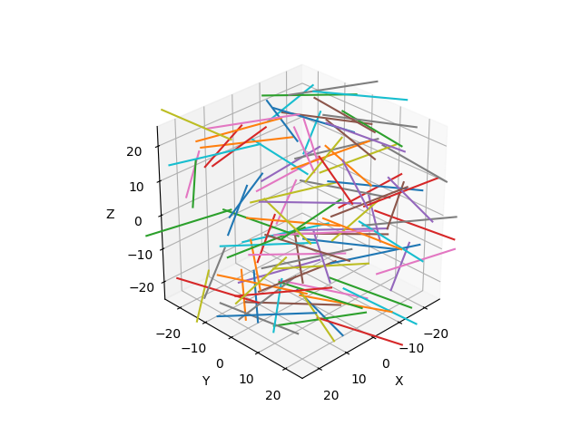

🧵 Mat(erial)
Mat
{kind=link}
- class fibermat.mat.Mat(*args, **kwargs)
A class inherited from pandas.DataFrame to describe a fibrous material made up of a set of random fibers. It defines:
the geometry of the straight fibers.
the initial configuration (positions and orientations).
the material properties.
Parameters
- nint, optional
Number of fibers. Default is 0.
- lengthfloat, optional
Fiber length (mm). Default is 25 mm.
- widthfloat, optional
Fiber width (mm). Default is 1 mm.
- thicknessfloat, optional
Fiber thickness (mm). Default is 1 mm.
- sizefloat, optional
Box dimensions (mm). Default is 50 mm.
- thetafloat, optional
In plane angle (rad). Default is π rad.
- psifloat, optional
Out-of-plane angle (rad). Default is 0 rad.
- shearfloat, optional
Shear modulus (MPa). Default is 1 MPa.
- tensilefloat, optional
Tensile modulus (MPa). Default is ∞ MPa.
- seedint, optional
Random seed for reproducibility. Default is 0.
Note
The constructor calls
init()method if the object is instantiated with parameters. Otherwise, initialization is performed with the pandas.DataFrame constructor.- Use:
>>> # Generate a set of fibers >>> mat = Mat(100) >>> mat l b h x y z u v w G E 0 25.0 1.0 1.0 2.440675 8.890827 -24.338157 0.289366 0.957218 -0.0 1.0 inf 1 25.0 1.0 1.0 10.759468 -11.499601 -24.178519 0.651721 0.758459 0.0 1.0 inf 2 25.0 1.0 1.0 5.138169 11.759701 -23.967450 0.865730 -0.500512 -0.0 1.0 inf 3 25.0 1.0 1.0 2.244159 23.109427 -23.766064 0.252040 -0.967717 0.0 1.0 inf 4 25.0 1.0 1.0 -3.817260 -12.562343 -23.716864 0.957840 -0.287303 0.0 1.0 inf .. ... ... ... ... ... ... ... ... ... ... ... 95 25.0 1.0 1.0 -15.840432 -0.477060 23.096819 0.128503 0.991709 -0.0 1.0 inf 96 25.0 1.0 1.0 4.325647 -13.629269 23.645974 0.898537 -0.438898 -0.0 1.0 inf 97 25.0 1.0 1.0 -23.994623 -12.282176 23.874757 0.900374 -0.435117 -0.0 1.0 inf 98 25.0 1.0 1.0 16.447001 -22.098542 24.091469 0.051275 -0.998685 -0.0 1.0 inf 99 25.0 1.0 1.0 -24.765226 -3.279169 24.516947 0.549633 -0.835406 0.0 1.0 inf [100 rows x 11 columns]
Data
- indexpandas.Index
Fiber label. Each label refers to a unique fiber.
- Fiber dimensions:
- lpandas.Series
Fiber length (mm). By default, 25 mm long fibers are used.
- bpandas.Series
Fiber width (mm). By default, 1 mm wide fibers are used.
- hpandas.Series
Fiber thickness (mm). By default, 1 mm thick fibers are used.
- Fiber position:
- xpandas.Series
X-coordinate (mm). By default, positions are randomly distributed with a uniform distribution between the positions X: [-25 mm ; 25 mm].
- ypandas.Series
Y-coordinate (mm). By default, positions are randomly distributed with a uniform distribution between the positions Y: [-25 mm ; 25 mm].
- zpandas.Series
Z-coordinate (mm). By default, positions are randomly distributed with a uniform distribution between the positions Z: [-25 mm ; 25 mm].
- Fiber orientation:
- upandas.Series
X-component. By default, orientations are randomly distributed with a uniform distribution in the half-unit circle θ: [-π / 2, π / 2].
- vpandas.Series
Y-component. By default, orientations are randomly distributed with a uniform distribution in the half-unit circle θ: [-π / 2, π / 2].
- wpandas.Series
Z-component. By default, orientations are in the plane, so the Z-component is 0.
- Material properties:
- Gpandas.Series
Shear modulus (MPa). By default, shear modulus is 1 MPa.
- Epandas.Series
Tensile modulus (MPa). By default, tensile modulus is infinite, which corresponds to fibers that are infinitely rigid in tension and bending.
Attributes
attrs:Global attributes of DataFrame.
Methods
init():Generate a set of random straight fibers.
check():Check that a
Matobject is defined correctly.
- property attrs
- Global attributes of DataFrame:
- nint
Number of fibers. By default, it is empty (n = 0).
- sizefloat
Box dimensions (mm). By default, the domain is a 50 mm square cube.
- static check(mat=None)
Check that a
Matobject is defined correctly.This method is automatically called by functions that use a
Matobject as input.Parameters
- matpandas.DataFrame, optional
Set of fibers represented by a
Matobject.
Raises
- KeyError
If any keys are missing from the columns of
Matobject.- AttributeError
If any attributes are missing from the dictionary
attrs.- IndexError
- If row indices are incorrectly defined:
Row indices are not unique in [0, …, n-1] where n is the number of fibers.
Fiber labels are not sorted.
- ValueError
- If any of the following conditions are not met:
Dimensions are not positive.
Positions are not within a box of size specified in
attrs.Orientation vectors do not have unit lengths.
Material properties are not positive.
Returns
- matpandas.DataFrame
Validated
Matobject.
- static init(n=0, length=25.0, width=1.0, thickness=1.0, size=50.0, theta=3.141592653589793, psi=0.0, shear=1.0, tensile=inf, seed=0, **kwargs)
Generate a set of random straight fibers.
Parameters
- nint, optional
Number of fibers. Default is 0.
- lengthfloat, optional
Fiber length (mm). Default is 25 mm.
- widthfloat, optional
Fiber width (mm). Default is 1 mm.
- thicknessfloat, optional
Fiber thickness (mm). Default is 1 mm.
- sizefloat, optional
Box dimensions (mm). Default is 50 mm.
- thetafloat, optional
In plane angle (rad). Default is π rad.
- psifloat, optional
Out-of-plane angle (rad). Default is 0 rad.
- shearfloat, optional
Shear modulus (MPa). Default is 1 MPa.
- tensilefloat, optional
Tensile modulus (MPa). Default is ∞ MPa.
- seedint, optional
Random seed for reproducibility. Default is 0.
Returns
- matpandas.DataFrame
Initialized
Matobject.
Other Parameters
- kwargs :
Additional keyword arguments ignored by the function.
Example
import numpy as np
from matplotlib import pyplot as plt
from tqdm import tqdm
from fibermat import *
# Generate a set of fibers
mat = Mat(100)
# Build the fiber network
net = Net(mat)
# Create the fiber mesh
mesh = Mesh(net)
# Get fiber data
dimensions = mat[[*"lbh"]] # size: (n x 3)
positions = mat[[*"xyz"]] # size: (n x 3)
orientations = mat[[*"uvw"]] # size: (n x 3)
# Check data
Mat.check(mat) # or `mat.check()`
# -> returns `mat` if correct, otherwise it raises an error.
# Figure
fig, ax = plt.subplots(subplot_kw=dict(projection='3d', aspect='equal',
xlabel="X", ylabel="Y", zlabel="Z"))
ax.view_init(azim=45, elev=30, roll=0)
if len(mat):
# Draw fibers
for i in tqdm(range(len(mat))):
# Get fiber data
fiber = mat.iloc[i]
# Calculate fiber end points
A = fiber[[*"xyz"]].values - 0.5 * fiber.l * fiber[[*"uvw"]].values
B = fiber[[*"xyz"]].values + 0.5 * fiber.l * fiber[[*"uvw"]].values
plt.plot(*np.c_[A, B])
# Set drawing box dimensions
ax.set_xlim(-0.5 * mat.attrs["size"], 0.5 * mat.attrs["size"])
ax.set_ylim(-0.5 * mat.attrs["size"], 0.5 * mat.attrs["size"])
plt.show()